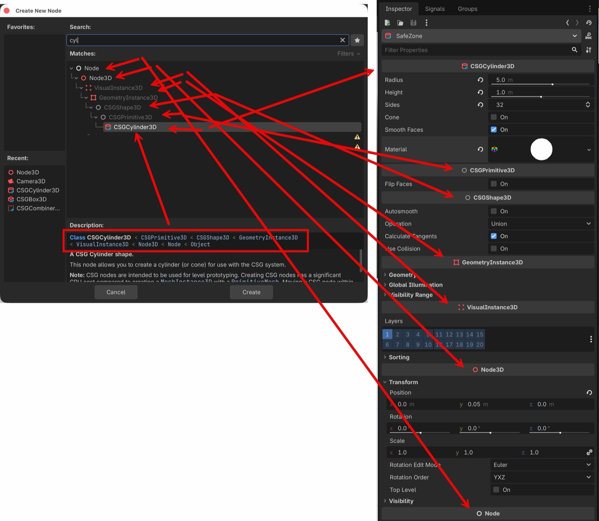

노드를 고를 때 본 상속 사슬과 인스펙터에 늘어선 그룹은 같은 것을 두 방향으로 보여주는 화면입니다. 이걸 알면 어떤 속성이 왜 거기 있는지가 전부 설명됩니다.

Description 의 상속 사슬 한 줄이,
오른쪽에서는 위에서 아래로 늘어선 그룹 머리글로 그대로 나타납니다.
(이미지를 클릭하면 원본 크기)
Node3D 를 상속하면 전부 Transform·Rotation·Scale 을 갖나요?노드를 추가할 때 뜨는 창의 Description 첫 줄이 상속 사슬입니다.
Class CSGCylinder3D < CSGPrimitive3D < CSGShape3D < GeometryInstance3D
< VisualInstance3D < Node3D < Node < Object엔진에서 확인한 사슬도 정확히 같습니다. 그리고 인스펙터가 이것을 뒤집어 늘어놓습니다.
Create New Node 의 사슬 인스펙터의 그룹 (위 → 아래)
──────────────────────── ─────────────────────────
CSGCylinder3D ─────────────→ ▸ CSGCylinder3D ← 현재 노드 자신
< CSGPrimitive3D ─────────────→ ▸ CSGPrimitive3D
< CSGShape3D ─────────────→ ▸ CSGShape3D
< GeometryInstance3D ─────────────→ ▸ GeometryInstance3D
< VisualInstance3D ─────────────→ ▸ VisualInstance3D
< Node3D ─────────────→ ▸ Node3D ← Transform 이 여기
< Node ─────────────→ ▸ Node
< Object (Object 는 표시되지 않는다)인스펙터에서 어떤 속성이 안 보이면, 그 노드가 그 클래스를 상속하지 않는 것입니다. 반대로 낯선 그룹 이름이 보이면 그것이 이 노드의 조상입니다.
Node3D 가 주는 것 — 9개| 프로퍼티 | 기본값 |
|---|---|
position | Vector3(0, 0, 0) |
rotation | Vector3(0, 0, 0) |
scale | Vector3(1, 1, 1) |
transform | Transform3D(1,0,0, 0,1,0, 0,0,1, 0,0,0) |
rotation_edit_mode | 0 (Euler) |
rotation_order | 2 (YXZ) |
top_level | false |
visible | true |
visibility_parent | NodePath("") |
인스펙터의 Node3D > Transform 을 펼치면 나오는
Position·Rotation·Scale, 그 아래
Rotation Edit Mode·Rotation Order·Top Level·Visibility 가
정확히 이 목록입니다.
| 노드 | 상속 사슬 |
|---|---|
Camera3D | Camera3D < Node3D |
CollisionShape3D | CollisionShape3D < Node3D |
MeshInstance3D | … < GeometryInstance3D < VisualInstance3D < Node3D |
CharacterBody3D | … < PhysicsBody3D < CollisionObject3D < Node3D |
DirectionalLight3D | … < Light3D < VisualInstance3D < Node3D |
끝에 Node3D 가 있으면 결과는 같습니다.
그래서 카메라를 옮기든 캐릭터를 옮기든 Position 을 고치는 방법은 하나입니다.
WorldEnvironment 에는 Transform 이 없다WorldEnvironment < Node < Object ← Node3D 가 없다
하늘·안개는 공간의 한 지점에 있는 것이 아니라 씬 전체에 걸리는 설정이라
위치가 필요 없습니다. 인스펙터에도 Transform 그룹이 나오지 않습니다.
"3D 씬에 있으니 당연히 위치가 있겠지"가 아니라 상속 사슬이 답입니다.
이 페이지는 요약본입니다. 확인 절차, 스크립트의 extends 와의 관계,
그 밖의 기본 개념은 저장소의 basics.md 에 있습니다.